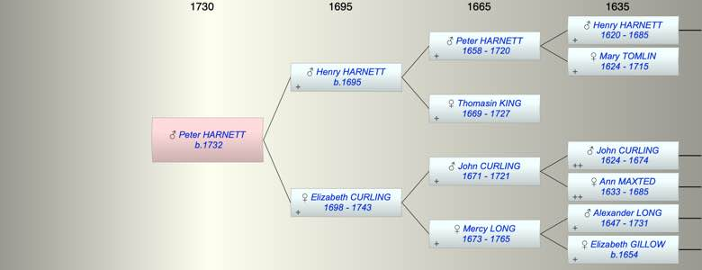

| [Index] |
| Peter HARNETT (1732 - ) |
|  |
| b. 1732 at St Laurence |
| Parents: |
| Henry HARNETT (1695 - ) |
| Elizabeth CURLING (1698 - 1743) |
| Events in Peter HARNETT (1732 - )'s life | |||||
| Date | Age | Event | Place | Notes | Src |
| 1732 | Peter HARNETT was born | St Laurence | Note 1 | ||
| 1743 | 11 | Death of mother Elizabeth CURLING (aged 45) | St Laurence | Note 2 | |
| Note 1: bap St Laurence 27 Aug 1732 ex FMP PR |
| Note 2: burial St Laurence 30 Aug, wife of Henry ex FMP PR |
| Created on a Mac™ using iFamily for Mac™ on 8 Oct 2023 |